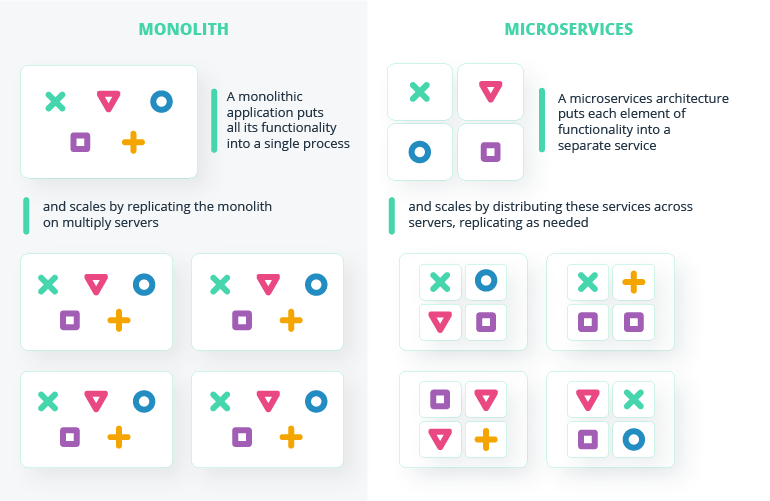
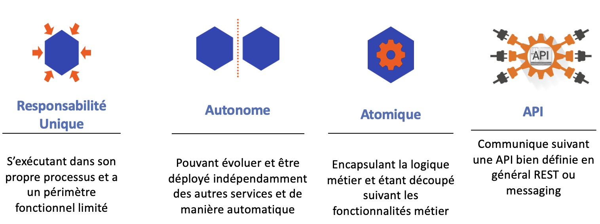
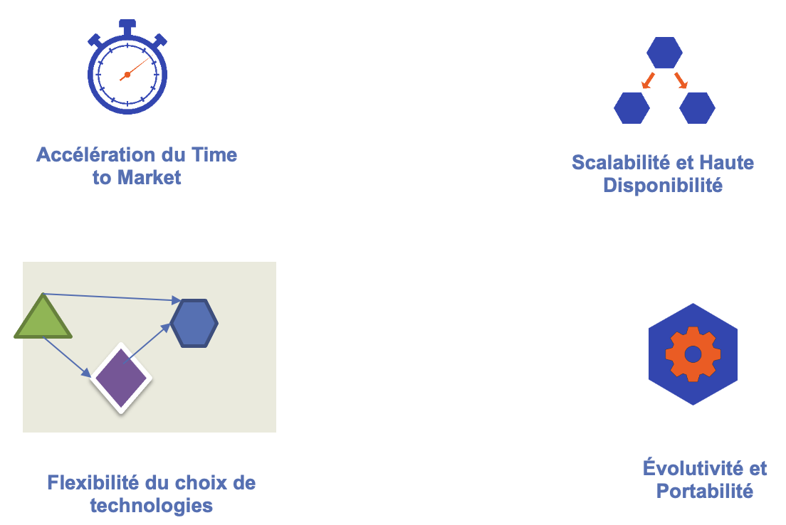
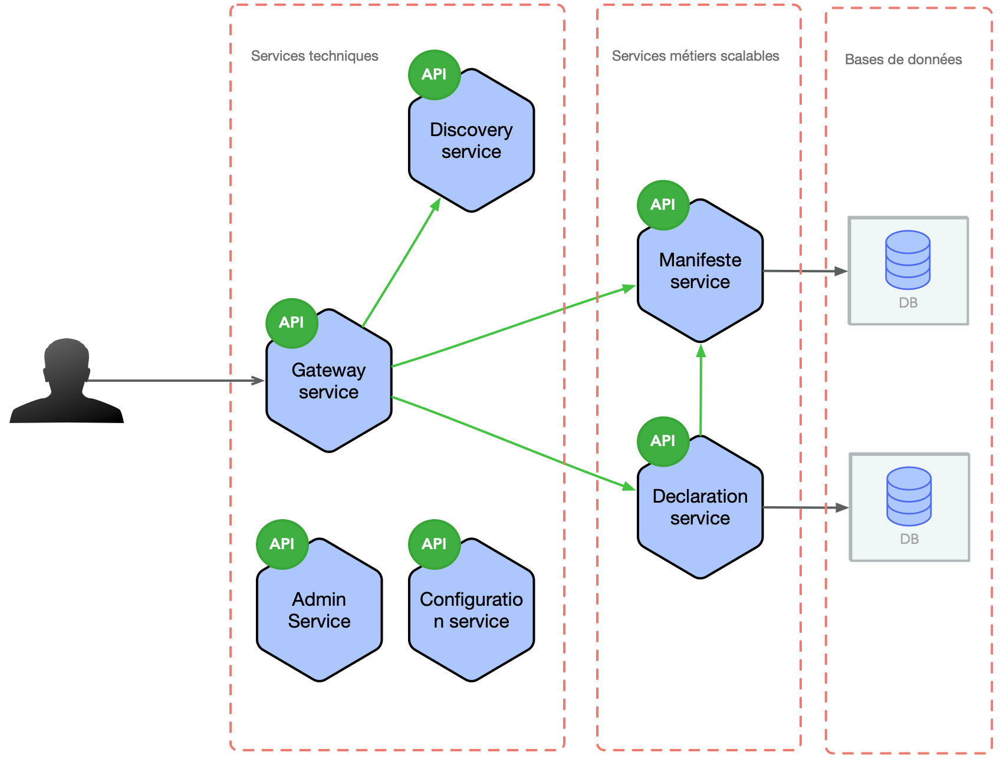

Spring Boot et Spring Cloud Workshop
Kamel NAJJAR
CKA, CKAD, CKS, AWS, CJE, C100DEV, New Relic
Plan de la formation
- Rappel sur les applications monolithiques
- Concepts sur l'architecture modulaire ou orienté composant
- Présentation de spring boot et spring cloud
- Centralisation de la configuration
- Service discovery
- Service de Routage
- Deploiement des modules applicatifs
Ressources de la formation
Slides de la formation
https://kamel2k.github.io/gainde-slides/
Ateliers de développement
http://kamel2k.github.io
Code Source
https://github.com/kamel2k/modern-application-workshop
Rappel sur les applications monolithiques
Monolith Hell
- Cycle de dév complexe: time to market élevé
- 1 seul processus système
- Single Point Of Failure
- Conflit des besoins en ressources (RAM/CPU)
- Pas de scalabilité unitaire des composants
- Unité de déploiement unique:
- 1 grosse archive (war|zip)
- Tps de démarrage long
- Difficile d’adopter une nouvelle technologie

App monolitique vs App modulaire msrv
Source: intellias.com
Mono vs Modulaire
- Une application monolithique classique embarque toutes ses fonctionnalité dans un seul processus
- a réponse à la montée en charge s’effectue en dupliquant ce monolithe sur plusieurs serveurs
vs
- Une application développée sous forme de modules ou composants indépendants pour former un service distinct
- Les services sont distribués sur les serveurs et la réponse à la montée en charge concerne les services qui le nécessitent
Caractéristiques des applications modulaires
Apport des applications modulaires
Présentation de l'étude de cas
Patterns de développement d'applications modernes
- Configuration externalisée
- Découverte de services
- Registre des services
- Passerelle API
- Métriques d'application
- Instance de service par conteneur
Présentation des différents frameworks Spring/Cloud
- Spring Boot
- Spring Web
- Spring Data JPA
- Spring Boot Actuator
- Spring Boot Admin
- Spring Cloud Config
- Spring Cloud Discovery
- Spring Cloud Gateway
- Swagger Openapi
Lab 1 : Mise en place de la plateforme de développement
Lab 2 : Prise en main de Spring Boot pour le développement des applications modulaires
Pourquoi Spring Boot ?
- Créer des applications Spring autonomes
- Tomcat ou Jetty sont intégrés directement (pas besoin de déployer des fichiers WAR)
- Configuration simplifiée avec les "starters"
- Fournit des fonctionnalités prêtes pour la production telles que des métriques
- Pas de génération de code
- Aucune exigence de configuration XML
Lab 3 : Centralisation et Externalisation de la configuration avec Spring Cloud Config
Pourquoi Spring Cloud Config ?
- La configuration de tous les modules applicatifs au même endroit
- Le module applicatif n'intègre pas de fichiers de configuration (pas de propriétes datasource, etc)
- Séparation du code source du module applicatif de la configuration
- Gestion efficace des environnements (recette, production, etc)
Lab 4 : Enregistrement et découverte de services avec Spring Cloud Discovery
Pourquoi Spring Cloud Discovery ?
- Enregistrement des modules applicatifs dans un annuaire de services
- Facilite la communication entre les modules applicatifs
- Prise en compte de la scalabilité pour les modules applicatifs avec le mécanisme de loadbalanceur
Lab 5 : Routage des services avec Spring Cloud Gateway
Pourquoi Spring Cloud Gateway ?
- Point d'entrée unique aux modules applicatifs
- Les appels vers la Gateway sont routés vers le module cible
- Assurer la sécurité et le monitoring des modules applicatifs
Lab 6 : Monitoring des modules applicatifs avec Spring Boot Admin
Pourquoi Spring Boot Admin ?
- Gestion et monitoring des modules avec une interface WEB
- Se base sur Actuator
- Enregistrement des modules dans Boot Admin
Lab 7 : Containerisation des modules applicatifs
Pourquoi Docker ?
- Facilite la portabilité de l'application Gainde
- Isolation de chaque module applicatif
- Facilite les déploiements